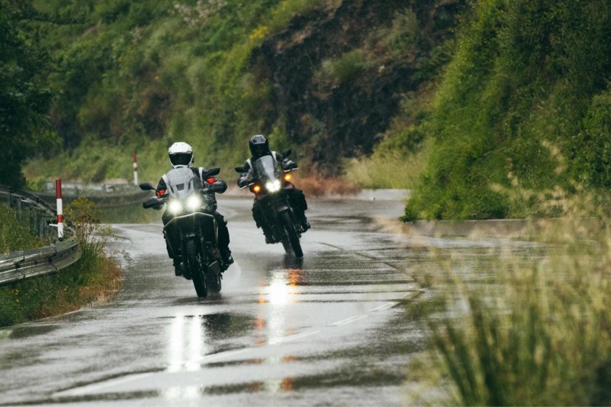
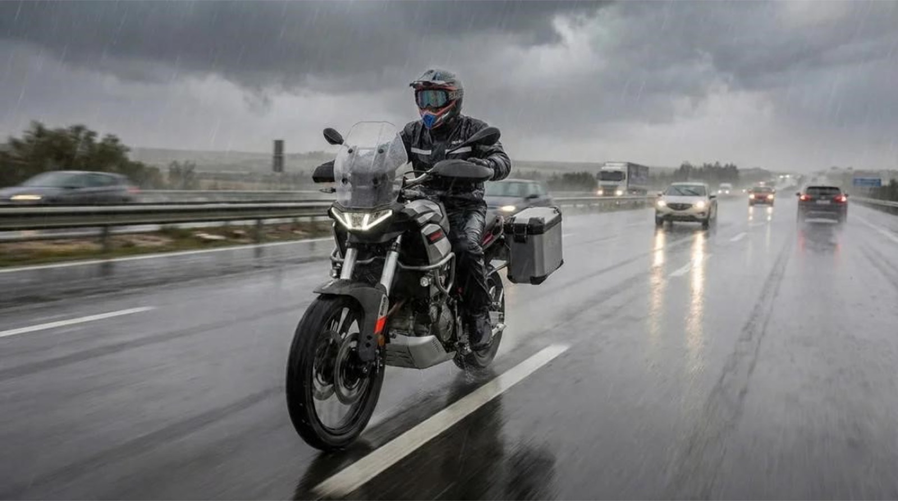
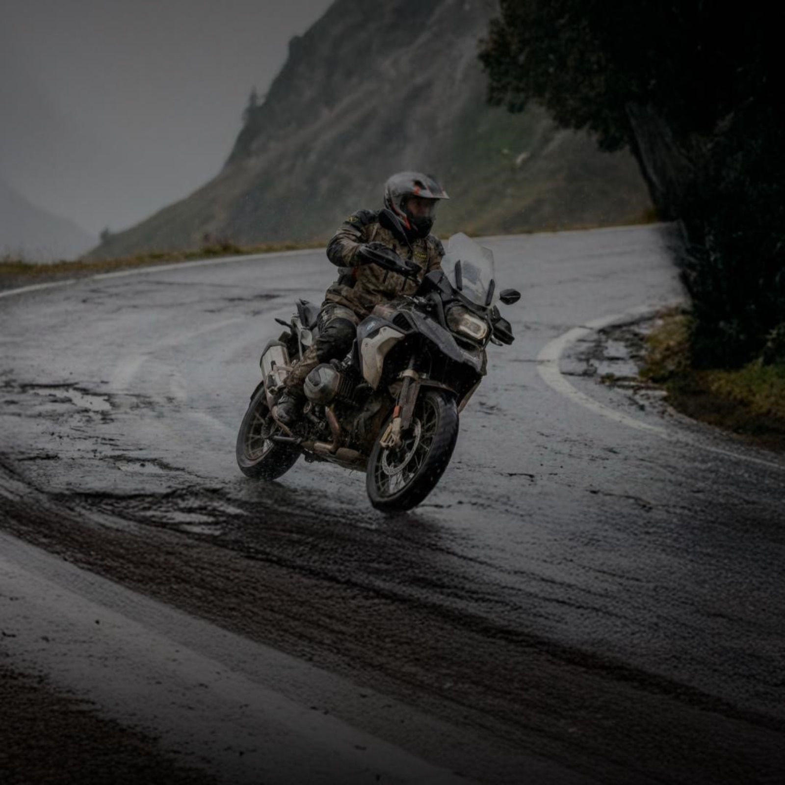
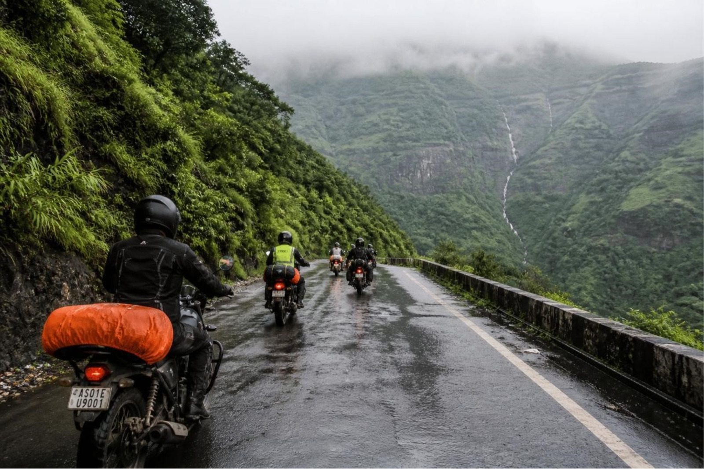

Planning a Monsoon Motorcycle Trip: Ride Safe and Enjoy the Rain
Description
Planning a motorcycle trip during the monsoon? Discover essential preparation tips, riding techniques, and smart planning advice to stay safe, comfortable, and make the most of your rainy-season adventure.

Planning a Monsoon Motorcycle Trip
For many riders, the monsoon is one of the most beautiful seasons to explore on two wheels. Rain transforms familiar roads into lush green landscapes, fills waterfalls to their fullest, and brings cooler temperatures that make long rides even more enjoyable. However, the same rain also creates slippery roads, poor visibility, waterlogged stretches, and unpredictable weather conditions that demand extra caution.
A successful monsoon ride isn't about avoiding the rain—it's about preparing for it. With the right motorcycle, riding gear, and mindset, you can safely enjoy one of the most scenic riding seasons of the year.
Prepare for Wet Weather
Before setting off, inspect your motorcycle thoroughly. Wet roads reduce traction, making properly maintained tyres and brakes essential for safe riding. Check your tyre tread and pressure, brakes, lights, chain lubrication, battery, and fluid levels to ensure your motorcycle is ready for changing road conditions.
Equally important is wearing the right riding gear. A waterproof riding jacket and pants, rain gloves, waterproof boot covers, and luggage covers help keep you dry and comfortable throughout the journey. An anti-fog visor or visor insert is also recommended to maintain clear visibility during heavy rain and sudden temperature changes.
Carrying a basic toolkit, tyre repair kit, portable air inflator, and first-aid kit ensures you're prepared if unexpected situations arise on remote routes.

Plan Your Route before You Ride
Weather conditions during the monsoon can change quickly, making route planning more important than ever. Before your trip, check the weather forecast, identify fuel stations, rest stops, and safe shelter points along your route. Download offline maps in case network coverage becomes unreliable in remote areas.
Whenever possible, avoid roads that are known for flooding, landslides, or poor drainage. Having an alternate route planned allows you to adapt quickly if road conditions deteriorate.
Starting your ride early in the day also provides better visibility and gives you enough time to reach your destination safely before heavy evening showers.
Ride Smoothly and Stay Alert
Rain demands a different riding approach. Reduce your speed, accelerate gently, and avoid sudden braking or sharp steering inputs that could cause your tyres to lose grip.
Be especially cautious when riding over painted road markings, metal bridges, railway crossings, and gravel patches, as these surfaces become significantly more slippery when wet. Increase your following distance to allow extra time for braking and avoid riding through deep water unless you're certain of the road conditions beneath.
If heavy rain or dense fog severely limits visibility, it's always safer to stop at a secure location and continue only when conditions improve.

Ride Smarter with Rydyt
Monsoon rides become even more challenging when riding in a group, as heavy rain and poor visibility can easily separate riders. Rydyt helps simplify group rides by combining route planning, live ride tracking, group location sharing, and rider communication into one platform.
Whether you're navigating changing weather, coordinating fuel stops, or ensuring every rider stays on the planned route, Rydyt keeps the entire group connected, making every monsoon ride safer, smoother, and better organized.

Monsoon Riding Essentials
Before every ride, make sure you carry:
- Waterproof riding jacket and pants
- Rain gloves and waterproof boot covers
- Anti-fog visor treatment or insert
- Tyre repair kit and portable air inflator
- Basic toolkit
- Power bank and flashlight
- First-aid kit
- Drinking water and energy snacks
- Waterproof luggage cover

A little preparation can prevent small issues from becoming major problems during your journey.
Final Thoughts
A monsoon motorcycle trip offers some of the most breathtaking riding experiences of the year. Mist-covered hills, vibrant greenery, and refreshing weather create unforgettable memories for riders willing to embrace the season responsibly.
The key to enjoying these rides is preparation. By maintaining your motorcycle, wearing the right protective gear, planning your route carefully, and adapting your riding style to wet conditions, you can confidently tackle every kilometer. Combined with smart ride management through Rydyt, you'll spend less time worrying about changing conditions and more time enjoying the incredible roads that only the monsoon can offer.
Ride patiently, stay alert, respect the weather, and let every rainy ride become another unforgettable adventure.
Invite. Ride. Track. Talk.
— The Rydyt Team